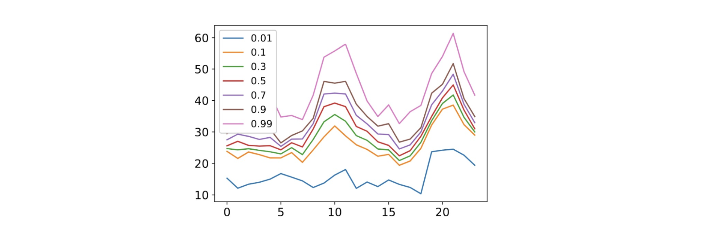
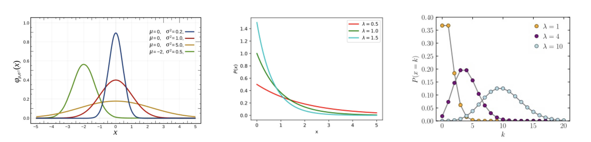

1. 단일 예측에서 확률적 예측(Probabilistic Forecasts)으로
이전 포스트에서는 시계열 데이터의 순차적(sequential) 특징을 모델링하기 위해 다층 퍼셉트론(MLP)에서 순환 신경망(RNN)으로 확장하는 과정을 다루었습니다. 하지만 현실의 시계열 예측 문제에서는 단순히 미래의 특정 시점 \(t\)에 대한 단일 예측값(single prediction) \(\hat{z}_{t}\)를 도출하는 것만으로는 충분하지 않은 경우가 많습니다.
불확실성이 존재하는 실제 환경에서는 미래 값의 확률 분포(distribution) \(P(z_{t})\) 자체를 추정하는 것이 궁극적인 목표가 됩니다. 이러한 접근 방식을 확률적 예측(Probabilistic Forecasting)이라고 합니다. 본 포스트에서는 계산의 편의를 위해 1-step 예측(\(h=1\)) 상황을 가정하고 논의를 진행하겠습니다.

2. 신경망 구조의 재구성: Encoder와 Projection Head
딥러닝을 활용해 확률적 예측을 수행하려면 기존 신경망의 구조를 어떻게 변경해야 할까요? RNN을 포함한 모든 딥러닝 기반 예측 모델은 크게 두 부분으로 나누어 볼 수 있습니다.
- 인코더 (Encoder): 입력 데이터를 처리하여 유용한 잠재 표현(representation) \(h\)를 생성하는 역할을 합니다. 이는 신경망의 마지막 직전 층(penultimate layer)까지의 연산을 포함합니다.
- 프로젝션 헤드 (Projection Head): 인코더가 추출한 \(h\)를 우리가 원하는 최종 예측값으로 변환(converting)합니다. 일반적으로는 \(\hat{y} = Wh + b\) 형태의 선형 맵핑(Linear mapping)이 사용됩니다.
확률적 예측을 위해 신경망 전체 구조를 바꿀 필요는 없습니다. 인코더가 생성한 요약 벡터 \(h_{t}\)가 주어졌을 때, 미래 값의 조건부 분포 \(P(z_{t}|h_{t})\)를 모델링할 수 있도록 프로젝션 헤드(Projection Head)만을 수정하는 것이 훨씬 효율적인 접근 방식입니다.
딥러닝 모델에서 확률적 예측을 구현하는 대표적인 방법론으로는 분위수 회귀(Quantile Regression)와 파라메트릭 분포(Parametric Distribution) 방법이 있습니다.
3. 접근법 1: 분위수 회귀 (Quantile Regression)
3.1. 분위수 예측의 개념
- 분위수 회귀의 핵심 아이디어는 각기 다른 신뢰 수준(confidence levels)을 가진 여러 개의 예측값을 생성하는 것입니다.

- 특정 분위수 \(x\)에 대한 예측값을 \(\hat{z}_{t}^{x}\)라고 할 때, \(P_{x}\) 예측(forecast)이 의미하는 바는 실제 관측치 \(z_{t}\)가 \(\hat{z}_{t}^{x}\)보다 작거나 같을 확률이 x%라는 것입니다.

P50 Forecast: 전체 시간의 50% 동안 \(z_{t} \le \hat{z}_{t}\)가 성립합니다. 이는 곧 예측의 중앙값(median)을 의미하며, 분포의 최빈값(가장 발생 확률이 높은 값)을 의미하는 것은 아닙니다.
P90 Forecast: 전체 시간의 90% 동안 \(z_{t} \le \hat{z}_{t}\)가 성립합니다.
분위수의 통계적 정의에 따라, \(a < b\)일 때 \(\hat{z}_{t}^{a} < \hat{z}_{t}^{b}\)가 자연스럽게 성립할 것으로 기대할 수 있습니다.
3.2. 다중 프로젝션 헤드 (Multiple Projection Heads)
- 다양한 분위수(예: \(q \in \{0.01, 0.1, 0.3, \dots, 0.99\}\))를 한 번에 예측하기 위해, 인코더에서 나온 동일한 은닉 상태(encoded state) \(h_{t}\)를 공유하되 각 분위수 \(q\)마다 서로 다른 선형 맵핑(가중치 \(w_{q}\))을 적용하는 다중 프로젝션 헤드를 구성합니다.
\[\hat{z}_{t}^{q} = w_{q}^{\top} h_{t}\]

3.3. 비대칭 분위수 손실 함수 (Asymmetric Quantile Loss)
- 여러 개의 분위수를 동시에 올바르게 학습시키기 위해서는 모델 파라미터 \(\theta\)를 최적화할 새로운 목적 함수(Objective Function) \(\mathcal{L}(\theta)\)가 필요합니다. 이는 각 분위수별 손실의 합으로 정의됩니다.
\[\mathcal{L}(\theta) = \sum_{q} loss_{q}(\hat{z}_{t}^{q})\]
- 여기서 각 \(loss_{q}\)는 비대칭 분위수 손실(Asymmetric quantile loss) 혹은 핀볼 손실(Pinball loss)이라고 불리며 다음과 같이 정의됩니다.
\[loss_{q}(\hat{z}_{t}^{q}) = \begin{cases} q \cdot (z_{t} - \hat{z}_{t}^{q}) & \text{if } z_{t} > \hat{z}_{t}^{q} \\ (1-q) \cdot (\hat{z}_{t}^{q} - z_{t}) & \text{if } z_{t} < \hat{z}_{t}^{q} \end{cases}\]
- 이 수식은 예측값 \(\hat{z}_{t}^{q}\)가 실제값 \(z_{t}\)를 과소 추정했을 때와 과대 추정했을 때, \(q\)의 값에 따라 패널티를 비대칭적으로 부여함으로써 모델이 정확한 분위수 지점을 찾아가도록 유도합니다.
3.4. 분위수 회귀의 장단점
- 장점 (Pros): 데이터가 따르는 특정 분포를 명시적으로 가정하고 모델링할 필요가 없습니다. 또한, 도출된 결과가 특정 신뢰 구간으로 바로 해석(interpretable) 가능하다는 실무적 이점이 있습니다.
- 단점 (Cons): 예측 결과가 연속적인 확률 분포(continuous representation) 형태를 지원하지 않습니다. 부드럽고 촘촘한 분포 형태를 추정하려면 매우 많은 수의 프로젝션 헤드가 필요하여 연산 비효율이 발생합니다.
4. 접근법 2: 파라메트릭 분포 (Parametric Distribution)
- 분위수 회귀의 단점을 극복하기 위한 두 번째 접근법은 파라메트릭 분포(Parametric Distribution)를 활용하는 것입니다. 이 아이디어는 조건부 분포 \(P(z_{t}|h_{t})\)가 가우시안(Gaussian) 정규분포와 같은 명시적이고 잘 알려진 통계적 분포를 따른다고 가정하는 데서 출발합니다.

- 이 방식에서 프로젝션 헤드의 반환값은 직접적인 예측값이 아닙니다. 대신, 가정한 분포의 파라미터(예: 평균, 분산 등)를 반환하게 됩니다.
4.1. 가우시안 분포 (Gaussian Distribution)의 적용
- 만약 \(P(z_{t}|h_{t})\)가 가우시안 분포를 따른다고 가정한다면, 이 분포의 확률 밀도 함수(PDF, Probabilistic density function)는 다음과 같습니다.
\[f(x) = \frac{1}{\sqrt{2\pi\sigma^{2}}} \exp\left(-\frac{(x-\mu)^{2}}{2\sigma^{2}}\right)\]

- 우리의 목표는 잠재 상태 \(h_{t}\)로부터 가우시안 분포를 결정짓는 두 파라미터인 평균 \(\mu\)와 분산 \(\sigma^{2}\) (혹은 표준편차 \(\sigma\))를 생성하여 \(P(z_{t}|h_{t})\)를 정의하는 것입니다. 이를 위해 다음과 같이 두 개의 독립적인 프로젝션 헤드를 설계합니다.
- 평균 추정: \(\mu(h_{t}) = w_{\mu}^{\top} h_{t}\) (실수 전체 범위를 가질 수 있으므로 일반 선형 결합 사용)
- 표준편차 추정: \(\sigma(h_{t}) = \text{softplus}(w_{\sigma}^{\top} h_{t})\)
- 여기서 표준편차 \(\sigma\)는 통계적 정의상 항상 양수여야 합니다. 이를 보장하기 위해 출력층에 Softplus 함수 \(f(x) = \log(1+e^{x})\)를 적용하여 네트워크 출력이 항상 0보다 큰 양수 값을 갖도록 강제합니다.

\[P(z_{t}|h_{t}) = \mathcal{N}(z_{t}|\mu(h_{t}), \sigma^{2}(h_{t}))\]
4.2. 음이항 분포 (Negative Binomial Distribution)
- 시계열 데이터가 수요량(demand)이나 판매량처럼 양수(Positive side)에만 집중되어 있고 이산적인(discrete) 특성을 띨 때는 가우시안보다 음이항 분포(Negative binomial distribution)가 더 적합할 수 있습니다.

\[P(z_{t}|h_{t}) = NB(z_{t}|\mu(h_{t}), \alpha(h_{t}))\]
- 음이항 분포를 위한 두 파라미터 \(\mu\)와 \(\alpha\) 역시 양수 제약 조건을 만족해야 하므로, 두 프로젝션 헤드 모두에 softplus 활성화 함수를 통과시킵니다.
- \(\mu(h_{t}) = \text{softplus}(w_{\mu}^{\top} h_{t})\)
- \(\alpha(h_{t}) = \text{softplus}(w_{\alpha}^{\top} h_{t})\)
4.3. 가우시안 혼합 모델 (Mixture of Gaussians, MoG)
데이터의 분포가 단일 봉우리(unimodal)가 아닌 복잡한 다봉형(multimodal) 형태를 가질 경우, 여러 개의 분포를 혼합한 가우시안 혼합 모델(Mixture of distributions)을 사용할 수 있습니다.
여러 분포를 혼합하기 위해서는 데이터가 어느 군집(Cluster)에 속할지를 결정하는 ‘소속 확률 파라미터(membership parameter)’ \(\pi\)가 추가로 필요합니다. \(K\)개의 군집을 가정할 때 혼합 분포는 다음과 같이 정의됩니다.
\[P(z_{t}|h_{t}) = \sum_{k=1}^{K} \pi_{k} \mathcal{N}(z_{t}|\mu_{k}(h_{t}), \sigma_{k}^{2}(h_{t}))\]

- 각 파라미터를 추정하는 프로젝션 헤드의 수식은 아래와 같습니다.
- \(\pi = \text{softmax}(W_{\pi} h_{t})\) (확률의 합이 1이 되어야 하므로 softmax 적용)
- \(\mu_{k}(h_{t}) = w_{\mu_{k}}^{\top} h_{t}\)
- \(\sigma_{k}(h_{t}) = \text{softplus}(w_{\sigma_{k}}^{\top} h_{t})\)
5. 실무적 고려사항: 데이터 분포 확인 및 표준화의 함정
5.1. 올바른 분포의 선택 (Choice of Distributions)
- 파라메트릭 접근법에서는 데이터 분포를 면밀히 관찰하여 적합한 분포를 선택하는 것이 매우 중요합니다.

- 위 그림처럼 실제 산업 현장의 판매량(sales) 데이터 등을 분석해보면, 값이 0인 데이터가 전체의 98%를 차지하는 등 극단적인 ‘롱테일(long-tail)’ 형태를 보일 때가 많습니다. 이 경우 단순한 가우시안이나 푸아송 분포보다는, 영과잉 음이항 분포 (Zero-inflated negative binomial)를 선택하는 것이 압도적으로 나은 모델링 결과를 가져옵니다.
5.2. 표준화 (Standardization)의 한계
시계열 데이터 전처리 시 \(z_{t} \leftarrow \frac{z_{t} - \text{mean}(\cdot)}{\text{std}(\cdot)}\) 식을 통해 모든 값의 평균을 0, 분산을 1로 맞추는 표준화(Standardization)를 널리 수행합니다.
하지만 주의할 점은, 데이터를 표준화한다고 해서 데이터의 실제 분포 형태(shape) 자체가 정규분포(normal distribution)로 변하는 것은 아니라는 점입니다. 잘못된 정규화(Bad normalization)는 오히려 본래 데이터의 특성을 왜곡하여, 모델링에 적합한 좋은 분포를 선택하는 것을 어렵게 만들 수 있습니다.
5.3. 파라메트릭 분포 모델의 장단점 요약
- 장점 (Pros):
- 데이터의 특성에 맞는 적절한 분포를 선택했을 때 모델의 예측 성능이 뛰어납니다.
- 예측된 분포가 닫힌 형태의 해(closed-form solutions)를 지원하므로, 재고 관리 최적화(‘최적의 구매 물품 수량은 얼마인가?’) 등 응용 문제에 수학적으로 바로 적용할 수 있습니다.
- 단점 (Cons):
- 데이터가 어떤 분포를 따르는지 사전에 명시적으로 가정해야 하는 부담이 있습니다.
- 시간이 지남에 따라 데이터의 근본적인 분포 자체가 변한다면, 과거에 맞춘 분포 모델이 더 이상 작동하지 않을 위험이 큽니다.